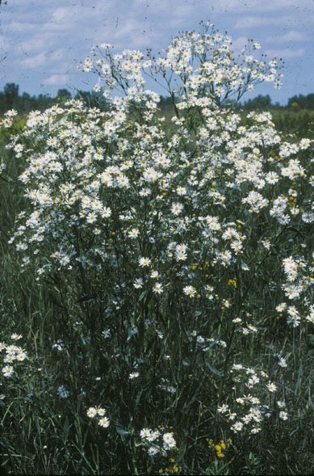
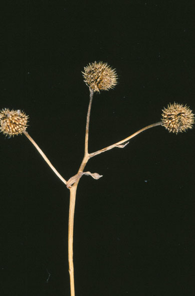

Boltonia Latisquama
Family: Asteracea
False Aster
Swink/Wilhelm #10

 Click to view larger photo
Click to view larger photo

FLOWERING: Late August to early October
SEED TIMING: Late October to November
HABITAT: Muddy marshes, wet woodlands and wet prairies
DIAGNOSTIC FEATURES: Up to 5 feet. Tall plant with numerous aster-like white flower heads. Grows in large stands.
TO PICK: Differs from Aster in having no fluffy pappus. Seed head is brown and individual heads stick together. Break off the entire top from the stem. Heads tend to disintegrate after seed has dropped.